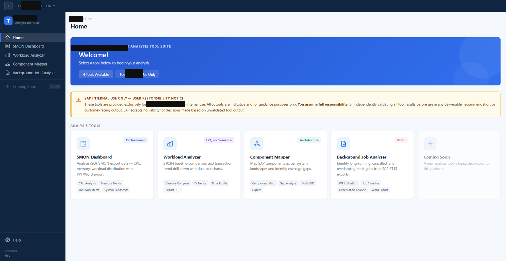

SAP Basis and performance engineer building developer tooling. Fortune 500 systems background, now applied to MCP servers, retrieval and agent workflows.
A suite of four tools built for SAP service-delivery consultants working Fortune 500 engagements — turning raw SAP exports (SMON, ST03N, SM13) into interactive dashboards and one-click PowerPoint/Word/Excel deliverables, instead of hours of manual CSV wrangling per customer.
Deployed globally across SAP's service-delivery organisation; saves consultants roughly 8 hours a week. The full writeup covers the architecture at the level of components and data flow.
